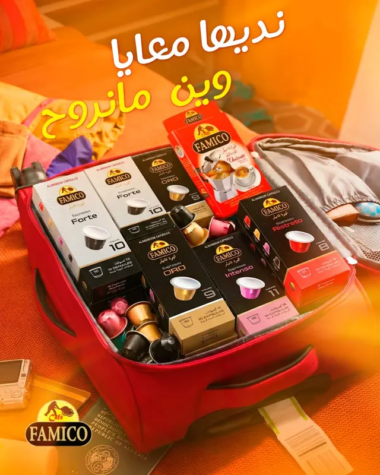
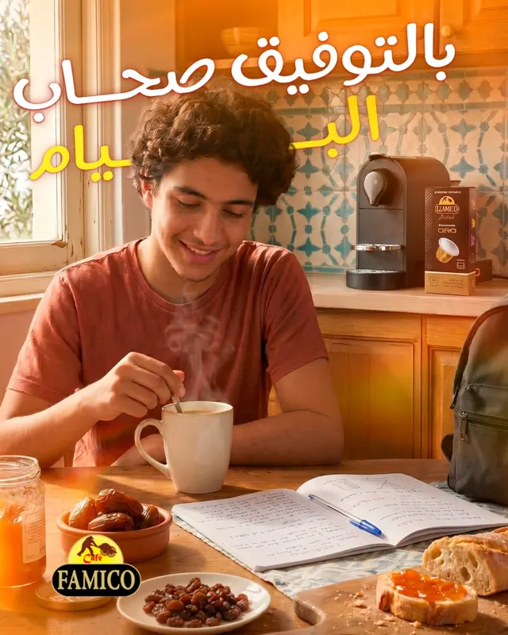
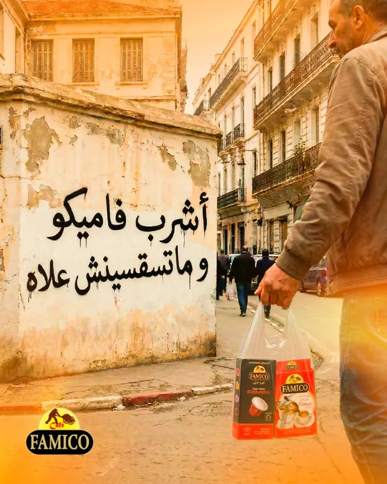
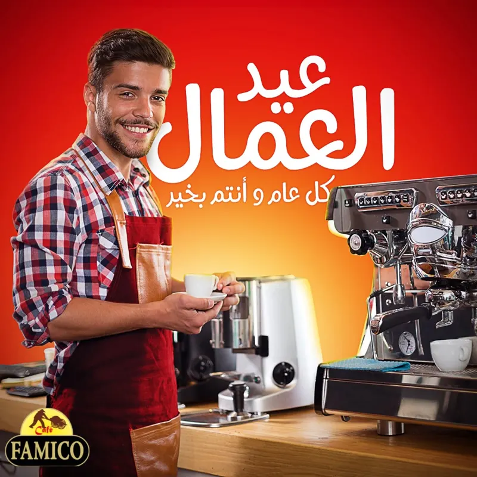
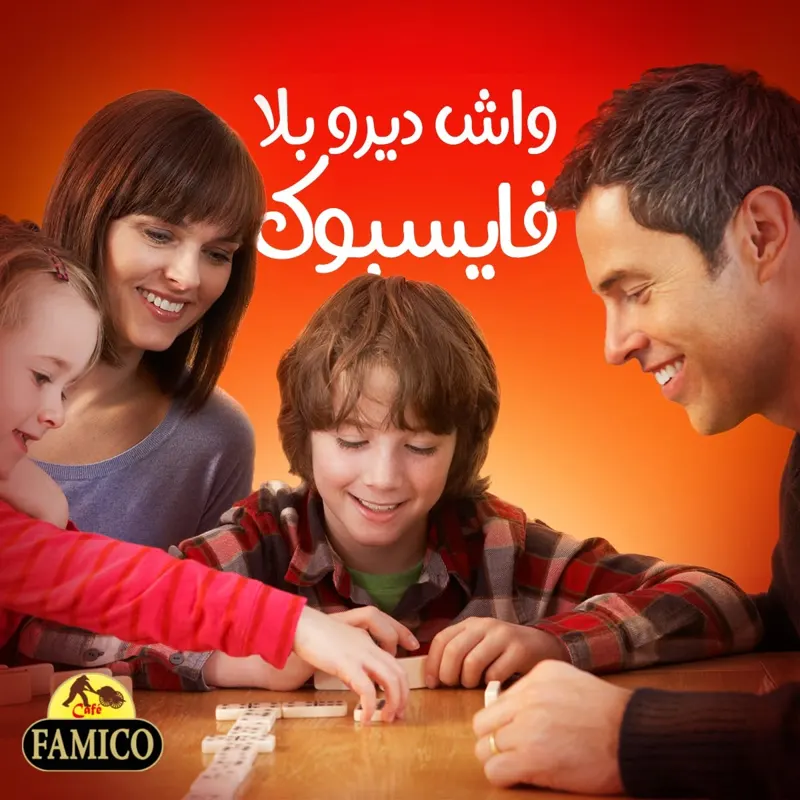

Velouté Torréfacto
قهوة فاميكو طورفاكتو
Un café rond et intense, à la mousse généreuse. Le rouge Famico, reconnu dans toutes les cuisines du pays.

Café moulu Velouté, grand format professionnel et capsules aluminium : Famico torréfie et conditionne à Douéra un café généreux, pensé pour la cafetière de la maison comme pour la machine du bureau.


Depuis notre site de production de la zone industrielle de Douéra, nous sélectionnons, torréfions et conditionnons un café au caractère affirmé. Une recette qui accompagne le café du matin, la qaâda de l'après-midi et la soirée de Ramadan.
Aujourd'hui, Famico c'est aussi une marque qui vit avec sa communauté : près de 300 000 personnes la suivent au quotidien.
Notre café torréfacto, moulu pour la cafetière italienne et la cafetière traditionnelle. En paquet de 250 g pour la maison, en seau de 5 kg pour les cafés et restaurants.
Un café rond et intense, à la mousse généreuse. Le rouge Famico, reconnu dans toutes les cuisines du pays.

Le même Velouté, en seau refermable pour les cafés, restaurants, hôtels et collectivités.
Des capsules aluminium par boîte de 10, pour un espresso de café à la maison, au bureau ou en voyage. Choisissez votre intensité.
Court et serré, pour ceux qui aiment l'essentiel du café.

Doré et équilibré, parfait aussi en latte glacé.

Corsé et profond, le réveil des matins chargés.

Le plus puissant de la gamme, pour les vrais amateurs.
Boîtes de 10 capsules aluminium.
Chaque paquet Famico suit le même chemin, contrôlé à chaque étape dans notre unité de Douéra.

Les lots de café vert sont choisis pour leur régularité, afin de retrouver le même goût dans chaque tasse.
Un profil de torréfaction généreux qui révèle le corps et les notes chocolatées du café Famico.
Une mouture calibrée pour la cafetière italienne et la cafetière traditionnelle, pour une extraction parfaite.
Paquets 250 g, seaux de 5 kg et capsules aluminium : un emballage pensé pour garder tout l'arôme.
Grossistes, supérettes, cafés-restaurants, hôtels et entreprises : rejoignez le réseau Famico partout en Algérie.
Fêtes, matchs de l'équipe nationale, Ramadan, rentrée : Famico accompagne chaque moment des Algériens.








